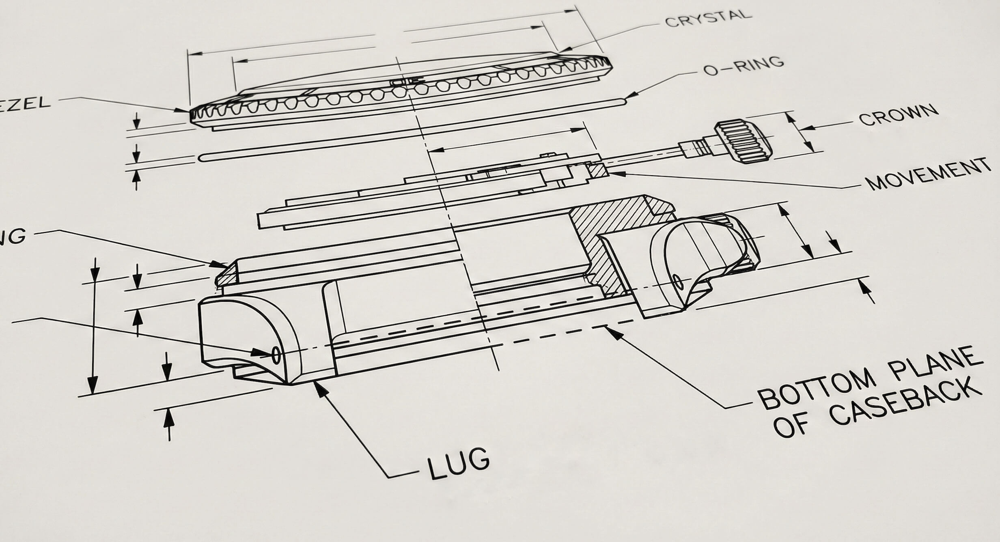
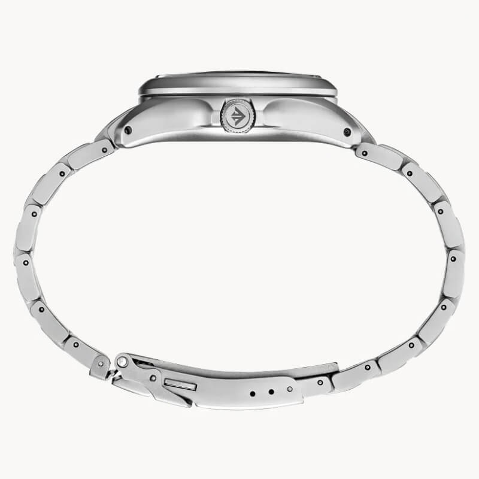
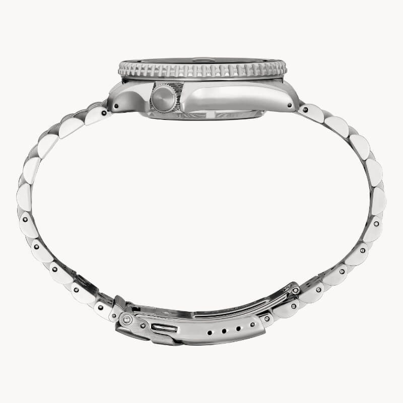
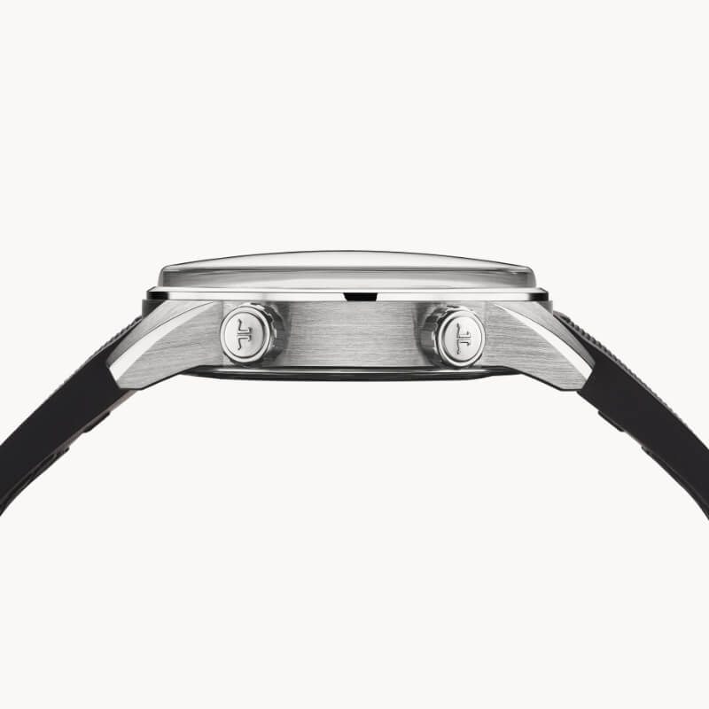
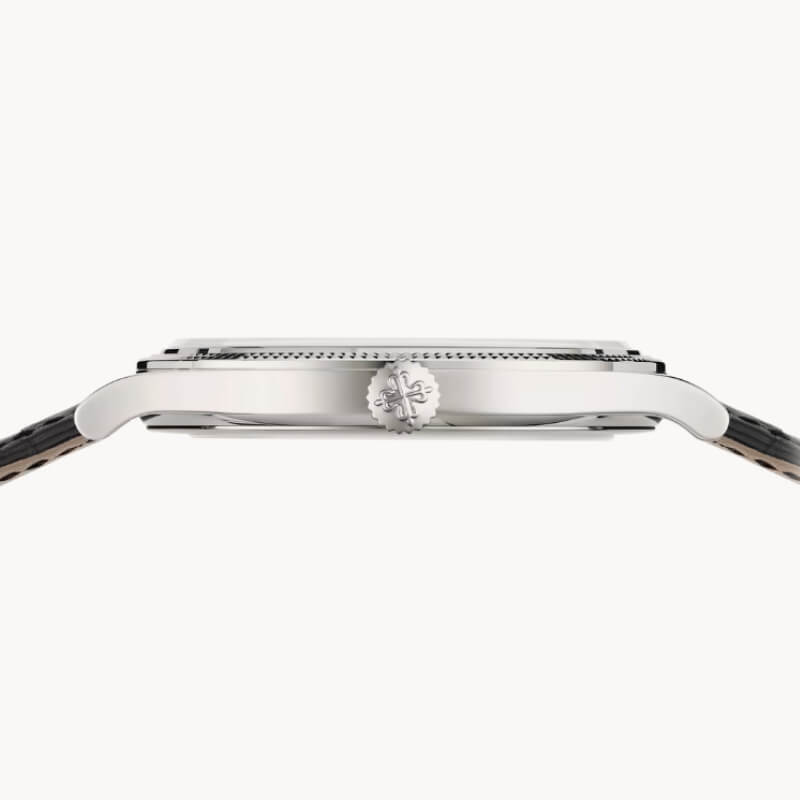
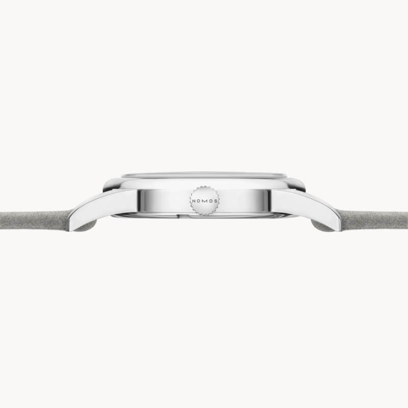
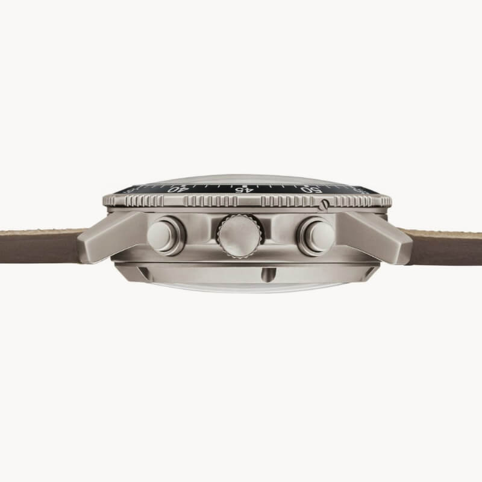

Why Lug Holes Below the Caseback Plane Are Critical for Comfort and Superior Wearability
We’ve all experienced it. You strap on a fresh watch, settle on a buckle hole, and convince yourself the leather just needs to soften up. But as the day wears on, that awkward top-heavy feeling persists. Maybe you find yourself cinching the strap down to an almost painful degree just to keep it in place. Before you blame the watch's weight or dimensions, check the lugs: the vertical position of the spring bar holes is likely the problem.
 Nenad Pantelic • November 13, 2025
Nenad Pantelic • November 13, 2025

Spring bars connect your watch to the strap (no sh#t, Sherlock), but the lug holes they fit into are more than just attachment points. Their vertical placement, specifically in relation to the plane of the watch's caseback, plays a critical role in how the watch wears and conforms to the natural curve of your wrist.
The Sweet Spot: Spring Bars In-Plane or Below the Caseback
For optimal comfort and a secure fit, the spring bar holes should ideally be positioned in the same plane as the caseback, or even slightly below it (closer to your wrist).
Why is this so important? When the attachment point of the strap is at or below the lowest point of the watch case (the caseback), the strap can naturally wrap around your wrist, pulling the watch case snugly and evenly against your skin. This creates the almost perfect connection, allowing the watch to feel like an extension of your arm.
Think of it like this: the caseback is the foundation of the watch on your wrist. If the strap pulls from a point level with or below this foundation, the watch sits flat and stable. The forces are distributed in a way that encourages the watch to follow the contour of your wrist.
Here is the comparison:


Why This Matters?
In my opinion if the spring bar holes are positioned in the same plane as the caseback, or even slightly below, that provides many benefits:
Better Stability & Reduced Wobble: The watch is significantly less likely to rock, shift, or feel like it's "floating" on your wrist. This foundational stability is key to a comfortable experience.
Improved Comfort & Less Strain: Because the watch sits securely without excessive pressure, you don't need to overtighten the strap. This gives a more pleasant wearing experience.
Better Drape & Wrist Conformity: The strap can articulate more freely and naturally from a point that encourages it to hug the wrist, allowing the entire watch and strap system to follow your arm's unique contours.
Improved Overall Balance: Especially for watches with a bit more heft or a taller profile, this lower attachment point contributes to a lower effective center of gravity when on the wrist. This makes the watch feel more balanced and less top-heavy.
Greater Consistency of Fit: Once you find your comfortable strap setting, the watch is more likely to return to that same ideal position each time you put it on. There's less need for constant fidgeting and readjustment because the watch is inherently more stable.
Potentially Less Snagging: This might be a subtle point, but a watch that sits lower and more securely against the wrist may be slightly less prone to snagging on shirt cuffs, jacket sleeves, or door jambs as you go about your day.
Some of the most comfortable watch designs have this kind of setup.



The Problem with High-Riding Spring Bars
Now, consider what happens when the spring bar holes are positioned above the plane of the caseback. This means the strap attaches to the watch head at a point higher than the part of the watch actually resting on your skin.
This small difference can create a bunch of wearability issues:
The Wobble Effect: With the attachment points elevated, the caseback essentially becomes a pivot point. The watch head is more prone to wobbling or "floating" on top of your wrist. Instead of the strap pulling the watch into your wrist, it's pulling it across a pivot, leading to that frustrating instability.
The Tight-Strap Trap: To counteract this wobbling, wearers often resort to tightening the strap excessively. While this might temporarily immobilize the watch head, it comes at the cost of comfort. An overly tight strap can dig into your skin, and simply feel constricting and unpleasant.
Reduced Conformity & Awkward Gaps: The watch struggles to follow the natural curve of your wrist. The caseback might press into one part of your wrist while the lugs lift off on another, creating an awkward fit and visible gaps.
Top-Heavy Sensation: Even if the watch isn't particularly heavy, this higher attachment point can make it feel more top-heavy and less secure, as the leverage isn't working in your favor.
Imagine trying to secure a small, flat box to a curved surface. If you attach straps to the top of the box, it will want to tilt and lift. If you attach them to the sides at the base, it will sit much more securely. The principle is similar with watches.

I don't want to name models or brands, or put anyone on the spot here. Check the forums, check watch communities, and you'll easily find examples of watches that suffer from poor lug hole placement.
The Question I Ask Myself Before Buying a Watch
I know it might sound silly, but when I am buying a watch, one of the first few steps in my process is to check the placement of the lug holes. I carefully inspect side-profile photos, trying to figure out exactly how the watch would wear and how the strap will sit.
Honestly, I am not that obsessed with the overall watch height, but I am very strict about the lug holes placement. It can make or break the experience for me.
Final Thoughts
So, the next time you're assessing a watch, pay attention to more than just the diameter or thickness. Take a close look at the lugs and where those spring bar holes are positioned. This specific element is the difference between a watch you admire in the box and one you actually enjoy wearing all day.
It proves that in watch design even the smallest details can make the biggest difference to your enjoyment.